CP-CHAT: the Copilot replies as a chat
| Item | Before | After |
|---|---|---|
| "Check my trade" tapped | "Check my trade idea" sent at once, with no idea in it | the box fills ("Check my trade idea: "), cursor at the end, one line says what to add; nothing sent |
| Same for "Turn my idea into a strategy" | sent at once | fills the box the same way (job list, help starters, ready questions) |
| Sending the bare prefill | - | stays in the box; only his completed idea goes out |
| AI prompt (analyst register) | "organise into sections, '## title', Summary first" | answer first, 1-3 short paragraphs, bullets only for a list, no headings, one short question when something is missing |
| Section chips row | on every reply with 3 headings | only on a long answer (1,500+ characters) |
| Reply look | full-width card | a chat bubble; a chart reading or refusal keeps its card |
| Safety rules | - | unchanged word for word (test checks every rule line in both registers and all languages) |
1440 px, dark
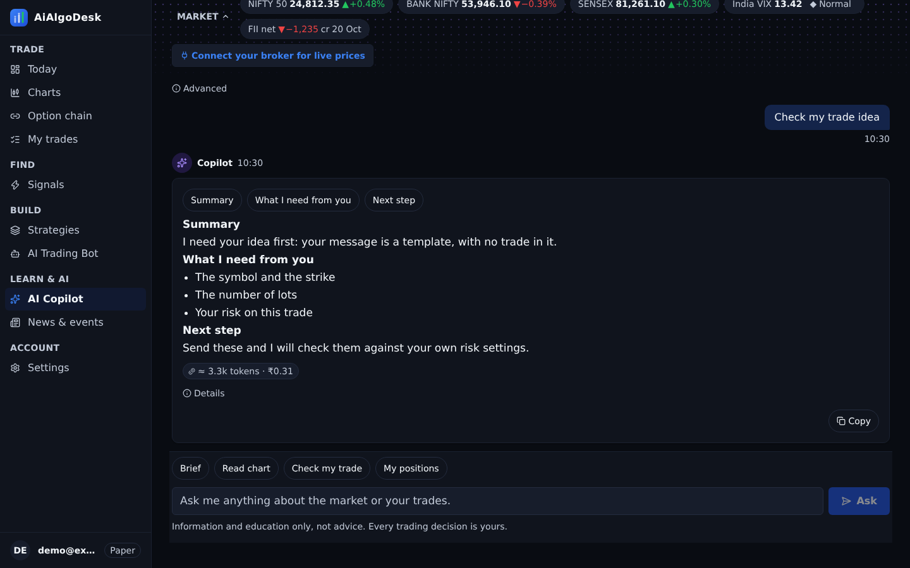
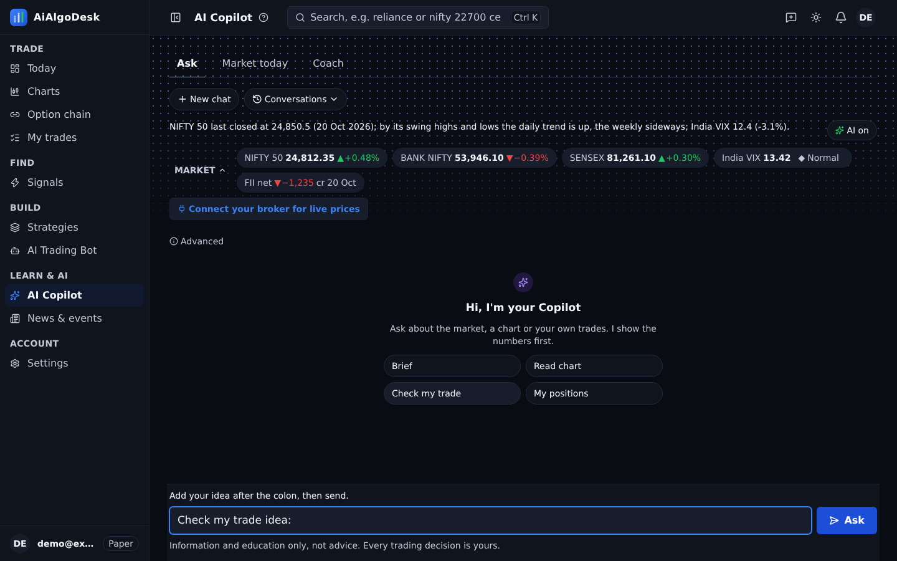
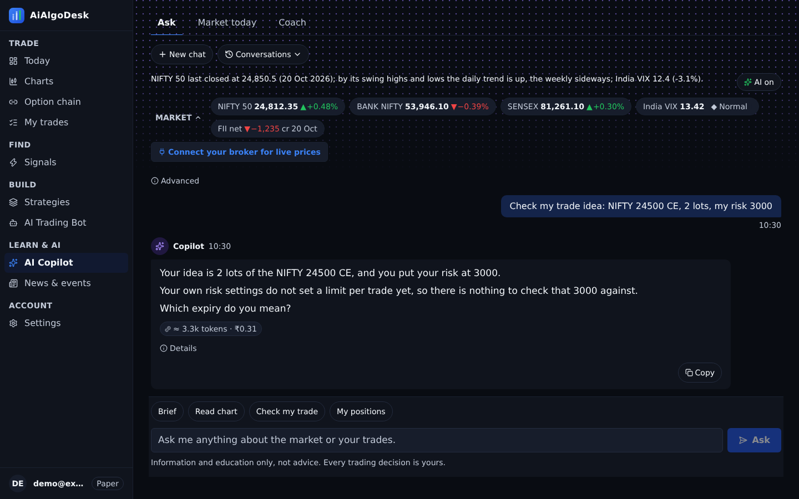
1440 px, light
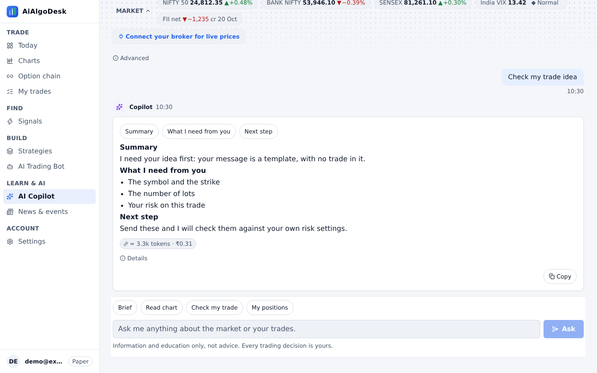
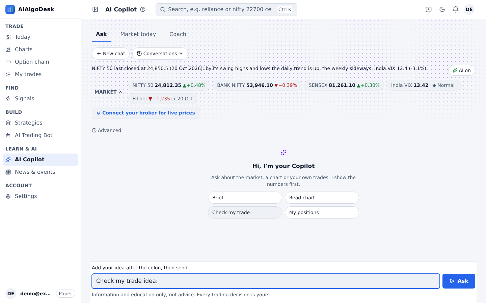
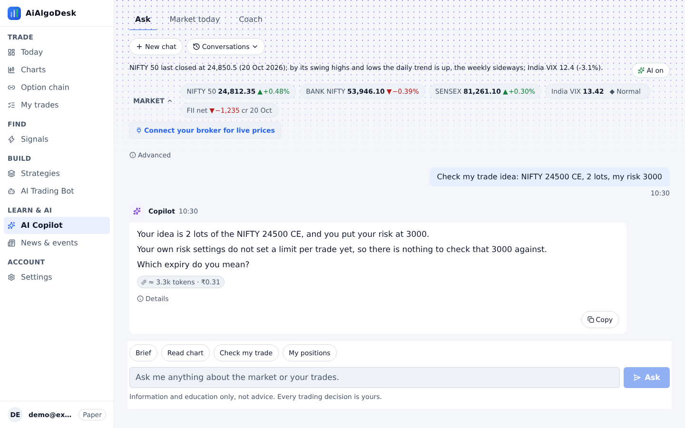
390 px, dark
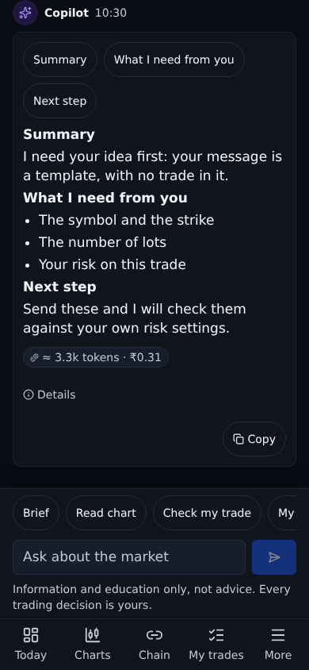
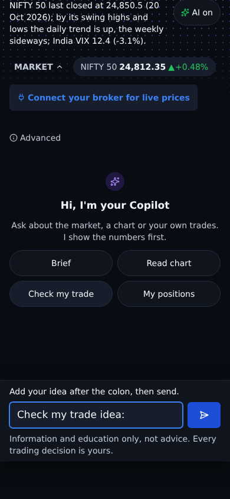
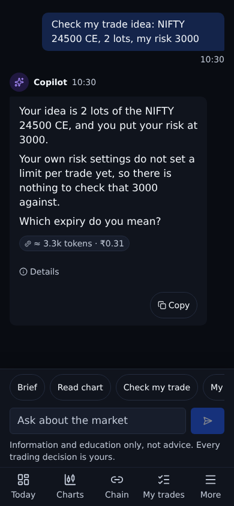
390 px, light
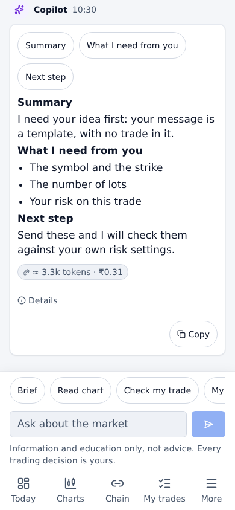
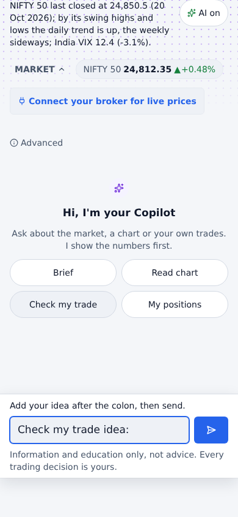
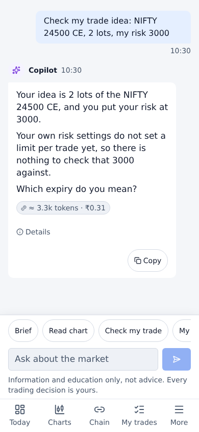